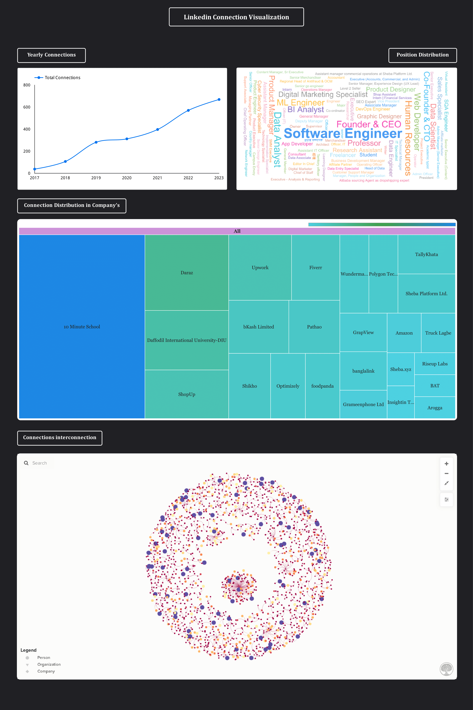

In our day-to-day corporate life, Linkedin became an essential part of communication. We
connect with various professionals throughout our career progression.
Hence, Linkedin does not give any built-in visualization for understanding our
network.
You can easily Download your LinkedIn connection information as CSV and make beautiful
visualization from it. Which will help you to find many potential insights. The dashboard
is built in Data Studio (formerly Looker Studio), with the network graph made in Kumu.
